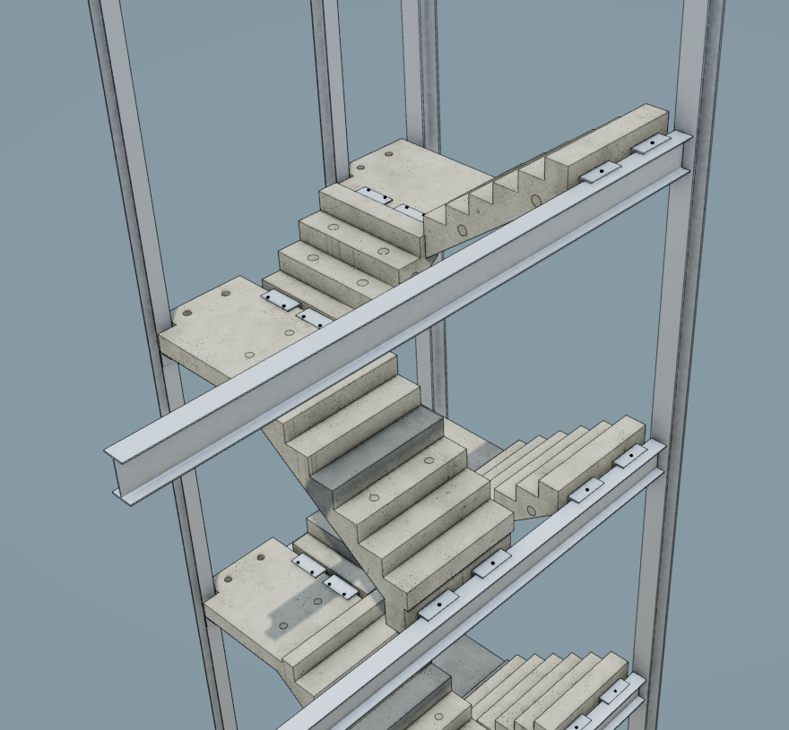

Example of Precast Stair Design

The live model can be explored directly in the browser. Use the mouse or touch controls to inspect the stair, and right-click inside the viewer for additional viewing options.
This is an example of a precast stair arrangement modelled in three dimensions before manufacture. The model shows the relationship between the individual stair flights, landings and the supporting steelwork.
Modelling the complete arrangement makes it easier to understand how the separate components fit together. It also gives a clearer visual representation than looking at each unit in isolation.
A three-dimensional model can also help communicate the design to other people involved in the project, because the overall arrangement can be viewed before anything is manufactured or installed.
Design Considerations
Stair design involves more than creating the shape of a flight. The position of landings, structural supports, connections and surrounding construction all need to work together as part of the overall arrangement.
Dimensions must be coordinated so that the individual precast units fit the building correctly. Connection positions also need to match the supporting structure, while allowing the stair to be manufactured, transported and installed.
Considering these details in the model helps identify clashes or unsuitable arrangements earlier, when changes are generally easier to make than they would be after manufacture.
Why I Find It Interesting
Precast stair design combines engineering, manufacturing and construction. Each unit needs to be designed accurately before it is produced.
Technology in Design
Modern design software allows complex concrete units to be modelled in three dimensions before manufacture. This can help identify problems earlier and communicate the design more clearly.
From Model to Manufacture
A digital model can be used to coordinate geometry and communicate how the finished components should fit together. This reduces the reliance on interpreting separate two-dimensional views.
Planned Installation Conditions
Check the forecast conditions for the planned installation of a precast stair. Enter the site location and the proposed installation date and time.
Further Information
More information about precast concrete can be found at The Concrete Centre.
Accurate digital modelling can help reduce errors before manufacture.